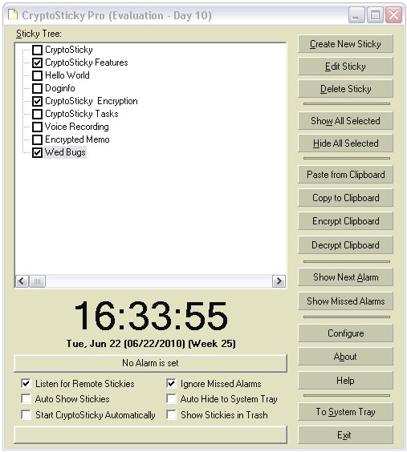
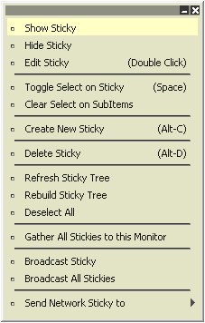

CryptoSticky
is auto
documenting, will guide you in the process of using it. There is an
extensive set
of screen tips, which allows one to fully learn all the important
features of CryptoSticky without ever reading the documentation.
CryptoSticky can
fully operate from the system tray. (The system tray is usually
at the
lower right
corner of your Windows Desktop). One can Show/Hide all Memos, create
new memos, delete memos, or show the CryptoSticky Main Panel, with a
click of the mouse.
Introducing the Main Panel:
The main
panel of CryptoSticky can be used to control all aspects of the
application. One can create new memos, edit existing memos, hide / show
memos,

|
The topmost button
can be used to Create a new sticky. To Create a new sticky,
press the 'Create New Sticky'
button.
The
successive buttons will Edit or Delete a sticky. The currently
selected sticky
is operated on, which is the selected sticky from the hierarchical list
of stickies on the left side of the panel. The hot key to create ia new
sticky s Alt-C, to edit
is Alt-E, and to delete is Alt-E. CryptoSticky will ask for
confirmation
before deleting a memo.
To hide the CryptoSticky progran to the system tray,
press the
'To
System Tray' button. When hidden to System tray, the alarms are
operational, and the stickyies can be shown with a single click. The
hot key to hide to system tray is Alt-S.
One can show all selected memos by clicking the ''Show All
Selected' button, and
hide all selected by pressing on 'Hide All Selected'. The hot
key to show all selected is Alt-W. The hot key to hide all memos is
Alt-D.
One can exit the CryptoSticky program from this panel by pressing
the 'Exit' button. The hot key
to exit is Alt-X, as denoted by the underscore under the letter X on
the button. When Exited, the alarms are off.
To Create a new
memo from the clipboard, press the 'Paste from Clipboard' button.
A new memo is created from the text contents of the clipboard. To
Copy a memo to the clipboard, press the 'Copy to Clipboard' button. A
copy of the memo is placed onto the clipboard in text format. Again,
the currently selected sticky is operated on.
|
CryptoSticky can show you the next armed memo (memo
with alarm set),
by
pressing the 'Show Next
Alarm'
button.
All
the
other
memos will be hidden temporarily, and only
the next alarm memo is visible. To show all the memos again, press the
'Sho
w All Selected'
button.
CryptoSticky
can be customized to suit your needs. Memo colors, fonts, transparency
and appearance, as well as alarm colors, and main panel transparencies
can be set independently. CryptoSticky can be configured to start
at Windows start-up
automatically. Just check the 'Start CryptoSticky
Automatically'
check
box. The initial state of CryptoSticky can be influenced by the 'Auto
Hide to System Tray' and the 'Auto Show Memos' check boxes.
CryptoSticky shows the current date and time in
multiple ways. The large digital clock shows the time, and the smaller
line below shows day of week, text date, numeric date, and week
enumeration. CryptoSticky can display the time in 24
Hour
12 Hour notation. The setup dialog has a 12h / 24h checkbox to easily
set your preferred display. CryptoSticky can read the time of day
out loud. Just click on the big digital time display numbers, and the
computer will read the current time. Naturally, when clicking on the
date, CryptoSticky will read the date. The date format has been chosen
to represent a 'fail-safe' date format with day name and month name
interlaced to make it unambiguous.
The Right Click Menu:
CryptoSticky's
main
menu display's tree control has an right
click context menu with plenty of options and commands. Most
commands operate on the currently highlighted sticky. One can show /
hide / edit the currently selected sticky, toggle select on that
sticky, and delete an individual sticky. One can create a new sticky,
just like the button on the main CryptoSticky panel.
Some of the commands operate on ALL the stickies under
CryptoSticky's control. One can refresh all the stickies in the sticky
tree, which re-reads the stickies from disk.
One can also e-select all currently selected stickies, a useful
feature after bulk import.
The 'Gather All Stickies' is a feature designed for
multi-monitor
systems,.Stickies might be displayed on a monitor that is powered
off or disconnected. This action will gather all sitckies onto the main
monitor (or the monitor the main panel is on) and display them in a
grid like fashion.
One can broadcast an individual sticky or all the stickies on
the local network. All currently active CryptoSticky installations will
receive the broadcast sticky, and if it is a new sticky or a changed
sticky, it will be saved and shown to that user. One can also
selectively send a single sticky to workstation / user by selecting an
entry from 'Send Network Sticky to' Only currently active CryptoSticky
network stations are listed under this menu.
|

|
ShortCut Keys:
| Alt-C |
Create a New Sticky
|
Alt-D
|
Delete currently selected
Sticky
|
Alt-X
|
Exit the CryptoSticky
program
|
Alt-S
|
Minimize CryptoSticky into
the system tray
|
F1
|
Help
|
Alt-W
|
Show All Stickies
|
Alt-R
|
Encrypt Clipboard
|
Alt-T
|
Decrypt Clipboard
|
Alt-A
|
Show Next Alarm
|
Alt-B
|
Show About Box and
registration dialog
|
Alt-Y
|
Jump to CryptoSticky
sticky tree
|
Please note that
in this document the work 'memo' and 'sticky' is used interchangably,
and both refer to the rectangular text area containing the user's
entries.